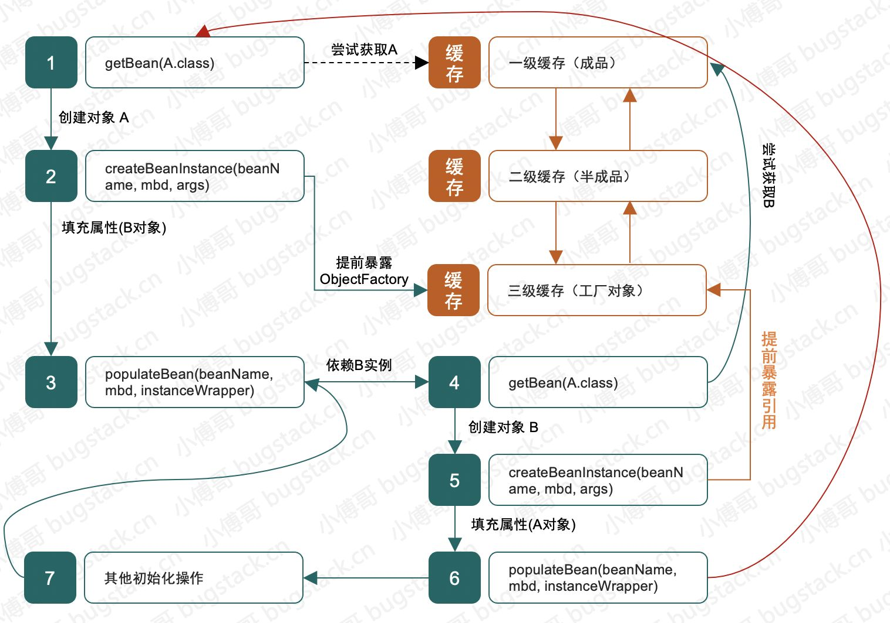

Spring 处理循环依赖 前置知识 在阅读此文章前, 了解一下基础知识有助于阅读
什么是循环依赖以及循环依赖出现的情况
spring bean的生命周期
解决循环依赖的核心思想
对象引用的提前暴露
先赋值, 再初始化
Spring不能解决循环依赖的场景
构造注入:
构造器注入时候, bean的创建有着严格的顺序, 这种顺序会使spring无法提前暴露引用
prototype模式Field属性注入循环依赖:
原型模式没有缓存, 每次注入都要创建新的对象, 会导致对象的循环创建, spring会检测到提前抛出BeanCurrentlyInCreationException
1 2 3 4 5 6 if (isPrototypeCurrentlyInCreation(beanName)) { throw new BeanCurrentlyInCreationException (beanName); }
对象的存储: 三个Map
Map<String, Object> singletonObjects :初始化完成之后的每一个单例 bean都会放人这个map中, 这个就是常说的单例池, 整个bean对象创建流程结束之后, 就会被放入其中保存起来. 以供后续使用Map<String, Object> earlySingletonObjects : 这个存放的是未完成初始化的bean(也可能是被代理但是也没有初始化的对象). 其中的对象在初始化完成之后就被移动到singletonObjects中Map<String, ObjectFactory<?>> singletonFactories 这里是存放的ObjectFactory, ObjectFactory在创建的时候就包含了bean的名称, bean的定义信息和实例化后的对象, 其中通过T getObject()方法获取对象, 返回两种对象的其中一种 :
lambda传入的原始bean实例
将bean实例进行代理 过后的代理对象
获取bean的流程 在AbstractBeanFactory中的doGetBean方法中
1 2 3 4 5 6 7 Object sharedInstance = getSingleton(beanName);if (sharedInstance != null && args == null ) { bean = getObjectForBeanInstance(sharedInstance, name, beanName, null ); }
DefaultSingletonBeanRegistry.getSingleton
1 2 3 4 5 6 7 8 9 10 11 12 13 14 15 16 17 18 19 20 21 22 23 24 25 26 27 28 29 30 31 32 33 34 protected Object getSingleton (String beanName, boolean allowEarlyReference) { Object singletonObject = this .singletonObjects.get(beanName); if (singletonObject == null && isSingletonCurrentlyInCreation(beanName)) { singletonObject = this .earlySingletonObjects.get(beanName); if (singletonObject == null && allowEarlyReference) { synchronized (this .singletonObjects) { singletonObject = this .singletonObjects.get(beanName); if (singletonObject == null ) { singletonObject = this .earlySingletonObjects.get(beanName); if (singletonObject == null ) { ObjectFactory<?> singletonFactory = this .singletonFactories.get(beanName); if (singletonFactory != null ) { singletonObject = singletonFactory.getObject(); this .earlySingletonObjects.put(beanName, singletonObject); this .singletonFactories.remove(beanName); } } } } } } return singletonObject; }
显然第一次getSingleton肯定返回了null, 因此进入下面代码
1 2 3 4 5 6 7 8 9 10 11 12 13 14 15 if (mbd.isSingleton()) { sharedInstance = getSingleton(beanName, () -> { try { return createBean(beanName, mbd, args); } catch (BeansException ex) { ... destroySingleton(beanName); throw ex; } }); bean = getObjectForBeanInstance(sharedInstance, name, beanName, mbd); }
getSingleton(beanName, lambda)方法中, 使用lambda传递了实例化后的bean
1 2 3 4 5 6 7 8 9 10 11 12 13 14 15 16 17 18 19 20 21 22 23 24 25 26 27 28 29 30 31 32 33 34 35 36 37 38 39 40 41 42 public Object getSingleton (String beanName, ObjectFactory<?> singletonFactory) { Assert.notNull(beanName, "Bean name must not be null" ); synchronized (this .singletonObjects) { Object singletonObject = this .singletonObjects.get(beanName); if (singletonObject == null ) { if (this .singletonsCurrentlyInDestruction) { throw new BeanCreationNotAllowedException ... } if (logger.isDebugEnabled()) { ... } beforeSingletonCreation(beanName); boolean newSingleton = false ; boolean recordSuppressedExceptions = (this .suppressedExceptions == null ); if (recordSuppressedExceptions) { this .suppressedExceptions = new LinkedHashSet <>(); } try { singletonObject = singletonFactory.getObject(); newSingleton = true ; } catch (IllegalStateException ex) { singletonObject = this .singletonObjects.get(beanName); if (singletonObject == null ) { throw ex; } } catch (BeanCreationException ex) { ... } finally { ... } if (newSingleton) { addSingleton(beanName, singletonObject); } } return singletonObject; } }
lambda表达式: AbstractAutowireCapableBeanFactory.java中的createBean方法调用了doCreateBean方法
1 2 3 4 5 6 7 8 9 10 11 12 13 14 15 16 17 18 19 20 21 22 23 24 25 26 27 28 29 30 31 32 33 34 35 36 37 38 39 40 41 42 43 44 45 46 47 48 49 50 51 52 53 54 55 56 57 58 59 60 61 62 63 64 65 66 67 68 69 70 71 protected Object doCreateBean (String beanName, RootBeanDefinition mbd, @Nullable Object[] args) throws BeanCreationException { BeanWrapper instanceWrapper = null ; if (mbd.isSingleton()) { instanceWrapper = this .factoryBeanInstanceCache.remove(beanName); } if (instanceWrapper == null ) { instanceWrapper = createBeanInstance(beanName, mbd, args); } Object bean = instanceWrapper.getWrappedInstance(); Class<?> beanType = instanceWrapper.getWrappedClass(); if (beanType != NullBean.class) { mbd.resolvedTargetType = beanType; } synchronized (mbd.postProcessingLock) { if (!mbd.postProcessed) { ... } } boolean earlySingletonExposure = (mbd.isSingleton() && this .allowCircularReferences &&isSingletonCurrentlyInCreation(beanName)); if (earlySingletonExposure) { if (logger.isTraceEnabled()) { ... } addSingletonFactory(beanName, () -> getEarlyBeanReference(beanName, mbd, bean)); } Object exposedObject = bean; try { populateBean(beanName, mbd, instanceWrapper); exposedObject = initializeBean(beanName, exposedObject, mbd); } catch (Throwable ex) { ... } if (earlySingletonExposure) { Object earlySingletonReference = getSingleton(beanName, false ); if (earlySingletonReference != null ) { if (exposedObject == bean) { exposedObject = earlySingletonReference; } else if (!this .allowRawInjectionDespiteWrapping && hasDependentBean(beanName)) { ... } } } try { registerDisposableBeanIfNecessary(beanName, bean, mbd); } catch (BeanDefinitionValidationException ex) { ... } return exposedObject; }
到此, 整个从getBean -> createBean就完成了, 对象创建完成, 依赖注入完成, 初始化完成并且放入了一级缓存中
循环依赖解决流程 有了上面spring获取和创建bean的流程之后, 分析循环依赖的解决流程就很轻松了
解决循环依赖的示意如下图, 其中最主要解决循环依赖的地方就是将ObjectFactory添加到三级缓存 中, 对象可以先将未初始化的引用A赋值给B的成员变量完成创建. 之后再对A进行成员变量的赋值和A整体的初始化
具体示意如图 :

图源自 小傅哥
只使用一级缓存能不能解决循环依赖? 一级缓存的主要是已经完成了依赖注入和初始化后的对象(各种后置处理器, AOP进行代理), 如果没有完成所有流程的对象半成品直接放入到一级缓存中中, 就会造成使用问题. 例如对象还没有进行依赖注入和初始化, 如果其他地方获取对象进行使用, 就造成了问题.
只使用二级缓存能不能解决循环依赖? 使用二级缓存, 能够有效的将成品bean和半成品bean隔开, 防止出现问题. 处理多个循环依赖的时候也能将半成品bean缓存起来, 达到单例的目的. 使用二级缓存就能够解决spring中的循环依赖问题. 但会出现与spring设计理念相违背的地方
对象被代理 在解决循环依赖的过程中, 如果直接将实例化后的对象放入earlySingletonObjects中, 在引用提前暴露的过程中是没有问题的, 但是如果对象后期被代理 , 之前进行的属性填充就没有意义了, 因为填充的不是真正会使用到的代理对象 , 所以, 使用提前暴露的引用的时候不能简单的直接使用实例化后的对象, 而是在使用前判断该对象需不需要被代理, 如果会被代理则需要先进行代理, 然后使用返回代理后的对象. 这就是为什么singletonFactories的value是个ObjectFactory了, 其实就是spring对上述操作的一个封装. 并且这样封装之后只需要在singletonFactories中查找一次就行了, 不需要每次判断一下earlySingletonObjects中的对象是不是需要被代理.
如果我们不使用singletonFactories, 只使用earlySingletonObjects, 在每次从earlySingletonObjects中获取对象都要判断一下需不需要进行代理, 这样增减了不必要的访问次数(map优化也不如使用singletonFactories“设计模式”高效)
总结 三级缓存可以说是spring中的一种”设计模式”,它配合二级缓存使用, 可以说三级缓存和二级缓存是一个整体, 不能分割,spring结合AOP跟bean的生命周期本身是通过AnnotationAwareAspectJAutoProxyCreator这个后置处理器来完成的，在这个后置处理的postProcessAfterInitialization方法中对初始化后的bean完成代理。如果出现了循环依赖, 只有给bean先创建代理，但是没有出现循环依赖的情况下，spring会让bean在最后一个阶段进行代理操作
声明 如有错误请联系作者更正